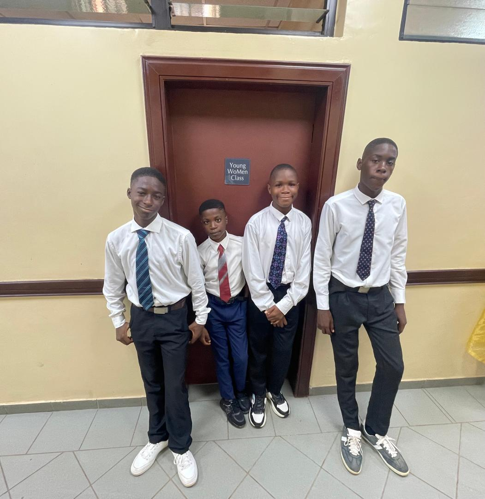

Ikporo Progress | wdd130
Hello! My name is Ikporo Progress and I am from Nigeria, lagos. I've always been passionate about computers and technology since i was young. I'm thrilled to be studying web design and developmet through BYU Idaho education system, which a friend from The Church of jesus Christ of latter-days Saints introduced me to. I joined the church in December 2024, and i'm really enjoying the process of becoming a professional web designer and developer.